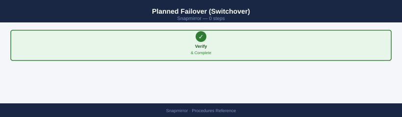
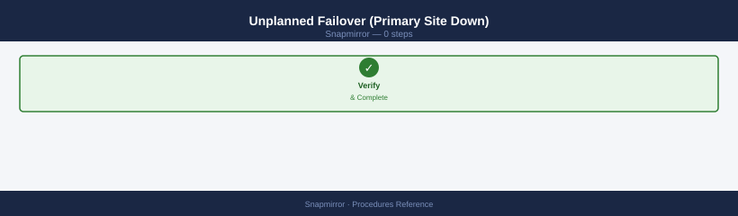
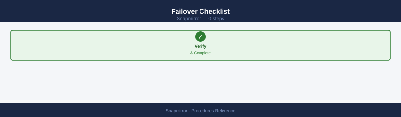
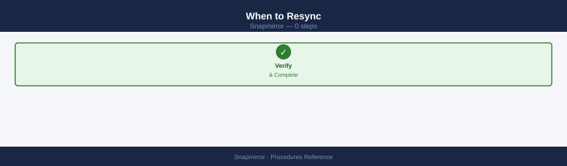
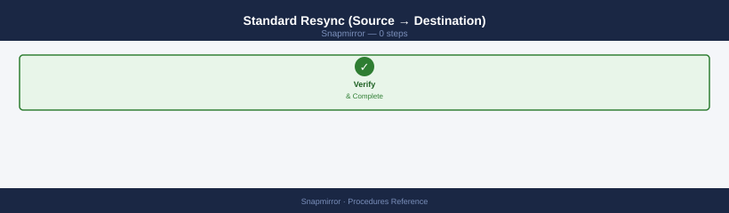
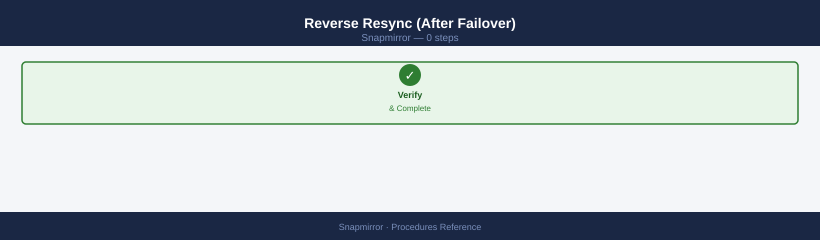

SnapMirror — Procedures¶
Before you begin¶
- Access: Storage admin credentials (cluster admin or equivalent)
- Timing: safe to run during business hours unless a step is marked ⚠ (causes interruption)
- Dependencies: no active upgrades or migrations on the same infrastructure
- Logging: capture command output — paste into the change record on completion
Change Readiness¶
- [ ] All relationships are healthy before quiescing — check
snapmirror show -fields healthyreturnstruefor all - [ ] Lag is within RPO on all critical volumes — document baseline lag before the change
- [ ] No relationships are in
broken-offstate from a prior DR test — resync before entering the change window - [ ] Destination aggregate has at least 20% free space to continue receiving transfers after the change
- [ ] Transfer schedules reviewed — plan the maintenance window to avoid overlapping with scheduled large transfers
- [ ] SnapMirror quiesce plan documented for source volumes involved in the change:
snapmirror quiesce -destination-path <svm:vol> - [ ] SMBC mediator reachable and pod state healthy before any change to synchronous relationships
| Item | Status | Notes |
|---|---|---|
| All relationships healthy | ||
| Lag within RPO on all critical volumes | ||
| No broken-off relationships | ||
| Destination aggregate has free space | ||
| SMBC mediator reachable (if applicable) |
Maintenance Window¶
- Identify all SnapMirror relationships for source volumes involved in the change
- Quiesce relationships to pause future transfers while finishing any in-progress transfer:
snapmirror quiesce -destination-path <svm:vol> - Confirm quiesce completes —
snapmirror show -destination-path <svm:vol>should showQuiesced - Perform the planned source-side change (ONTAP upgrade, volume move, aggregate maintenance, etc.)
- Resume relationships after the change is complete:
snapmirror resume -destination-path <svm:vol> - Trigger an immediate incremental update to minimize lag catch-up:
snapmirror update -destination-path <svm:vol> - Monitor lag recovery:
snapmirror show -fields lag-time— confirm lag returns to within RPO - For SMBC: confirm pod state returns to
InSyncafter resuming; verify mediator is registering both arrays
Post-Change Validation¶
- [ ] Run
snapmirror show -fields healthy— all relationships showhealthy: true - [ ] Run
snapmirror show -relationship-status broken-off— returns no results - [ ] Lag time is recovering and trending back within RPO on all critical relationships
- [ ]
snapmirror show -type sync -fields is-healthy— all synchronous relationships showIn-Sync - [ ] Transfer history shows successful incremental transfers post-change:
snapmirror history show - [ ] Destination aggregate has sufficient free space — no space-related transfer errors
- [ ] SMBC pod state is healthy and mediator connectivity confirmed (if applicable)
Failover Procedure¶
SnapMirror failover activates the destination volume as the primary, allowing client access during a primary site outage.
Planned Failover (Switchover)¶

For maintenance or planned migration:
# On the destination cluster — break the SnapMirror relationship
# This makes the destination volume writable
snapmirror break -destination-path <dest_svm:dest_vol>
# Verify destination is now read-write
volume show -vserver <dest_svm> -volume <dest_vol> -fields state
Operation succeeded: SnapMirror relationship between source and destination has been broken.
Vserver Volume State
----------- ------------ ------
dest_svm dest_vol online
Common errors
Error: command failed: Relationship does not exist — Verify the destination path syntax matches <svm_name>:<volume_name> and confirm the SnapMirror relationship exists with snapmirror show.
Error: command failed: Volume is restricted — Wait for any ongoing SnapMirror transfers to complete or use snapmirror abort to stop an in-progress transfer before breaking the relationship.
Update client access (DNS, share paths, mount points) to point to the destination.
Unplanned Failover (Primary Site Down)¶

# On the destination cluster — break the relationship to enable write access
snapmirror break -destination-path <dest_svm:dest_vol>
# Check how current the destination is (RPO)
snapmirror show -destination-path <dest_svm:dest_vol> -fields lag-time
Operation succeeded: SnapMirror relationship between source_cluster://source_svm/source_vol and dest_cluster://dest_svm/dest_vol is broken.
Destination-Path Lag-Time
dest_svm:dest_vol 00:15:32
Common errors
Error: command failed: relationship does not exist — Verify the destination path syntax matches exactly (SVM:volume format) and confirm the relationship exists with snapmirror show.
Error: command failed: relationship is not in a quiesced or idle state — Wait for any in-progress transfer to complete or use snapmirror abort before attempting to break the relationship.
Note: if replication was asynchronous, the lag-time value indicates the RPO gap.
Failover Checklist¶

- [ ] Determine RPO: check
lag-timebefore breaking relationship - [ ] Break SnapMirror:
snapmirror break - [ ] Update DNS/client access to destination
- [ ] Validate application connectivity
- [ ] Document time of failover for change management
- [ ] Plan resync window after primary recovery
Resync Procedure¶
Resync re-establishes a SnapMirror relationship after it has been broken (intentionally for failover, or due to an error).
When to Resync¶

- After a planned failover (
snapmirror break) — resync to restore replication - After data has diverged on both source and destination
- After re-establishing connectivity between clusters following an outage
Standard Resync (Source → Destination)¶

# Re-establish replication from source to destination
snapmirror resync -source-path <src_svm:src_vol> \
-destination-path <dest_svm:dest_vol>
Operation is queued: snapmirror resync to destination "cluster2.svm_dr:vol_backup" is queued.
Common errors
Error: command failed: snapmirror resync is not supported for this relationship type — Verify the SnapMirror relationship exists and is in a valid state using snapmirror show -destination-path <dest_svm:dest_vol>.
Error: command failed: source volume <src_svm:src_vol> does not exist or access denied — Confirm the source path is correctly formatted as cluster_name.svm_name:volume_name and the source cluster is reachable.
Resync overwrites the destination with data from the source. Any writes to the destination since the break will be lost.
Reverse Resync (After Failover)¶

When the original destination was activated (failed over to) and is now the active source:
# Step 1: Resync from destination (now active) back to the original source
snapmirror resync -source-path <dest_svm:dest_vol> \
-destination-path <src_svm:src_vol>
# Step 2: Monitor until transfer completes
snapmirror show -destination-path <src_svm:src_vol>
# Step 3: After primary is ready to resume, break reverse relationship
snapmirror break -destination-path <src_svm:src_vol>
# Step 4: Re-establish original direction
snapmirror resync -source-path <src_svm:src_vol> \
-destination-path <dest_svm:dest_vol>
Operation is queued: snapmirror resync to destination "cluster2://dr_svm/dr_vol".
Progress
Source Destination Mirror State Relationship Status Last Transfer
------------------ ------------------- -------- -------- ----------------
cluster1://prod_svm/prod_vol
cluster2://dr_svm/dr_vol
Snapmirrored
Transferring 856.3MB/2.1GB
cluster1://prod_svm/prod_vol
cluster2://dr_svm/dr_vol
Snapmirrored
Idle 2.1GB
SnapMirror break for destination "cluster1://prod_svm/prod_vol" is queued.
Operation is queued: snapmirror resync to destination "cluster2://dr_svm/dr_vol".
Common errors
Error: command failed: SnapMirror relationship is not idle — Wait for the current transfer to complete using snapmirror show before attempting resync or break operations.
Error: SnapMirror relationship does not exist for destination path "cluster1://prod_svm/prod_vol" — Verify the destination path is correctly formatted as svm_name:volume_name and the relationship exists with snapmirror show -all.
Initialize a SnapMirror Relationship¶
Run the initialize command to perform the first baseline transfer from source to destination:
Operation is queued: snapmirror initialize of destination "cluster2.svm_dr:vol_backup" from source "cluster1.svm_prod:vol_data".
Common errors
Error: command failed: Snapmirror relationship does not exist. — Create the snapmirror relationship first using snapmirror create before initializing.
Error: command failed: Source volume is offline. — Verify the source volume is online with volume show -vserver <vserver> -volume <volume> and bring it online if needed.
Error: command failed: Destination volume is not empty. — Use snapmirror initialize -S to force initialization, or manually clear the destination volume first.
Monitor initialization progress — the first transfer copies all data and can take hours depending on volume size:
Source Destination State Lag-time
cluster1://vol_prod cluster2://vol_prod_mirror Snapmirrored 00:15:32
cluster1://vol_data cluster2://vol_data_mirror Snapmirrored 00:08:47
cluster1://vol_logs cluster2://vol_logs_mirror Snapmirrored 00:22:15
cluster1://vol_archive cluster2://vol_archive_mirror Snapmirrored 01:45:03
cluster1://vol_test cluster2://vol_test_mirror Snapmirrored 00:05:21
Common errors
Error: command not found: snapmirror — Ensure you are logged into the NetApp cluster CLI (ssh to cluster management IP) rather than a standard Linux shell.
Error: This command requires cluster administrator privileges — Run the command with appropriate cluster admin credentials or use set -privilege advanced if needed.
Wait until the relationship state shows Idle and the lag-time reflects the time since the baseline transfer completed. The destination volume is read-only once initialization finishes.
Update SnapMirror Manually¶
Trigger an on-demand incremental update outside the scheduled transfer window:
Operation is queued: snapmirror update for destination "cluster2://svm_dr/vol_backup".
Common errors
Error: command failed: Snapmirror relationship does not exist. — Verify the destination volume exists and a SnapMirror relationship has been initialized with snapmirror create before attempting an update.
Error: command failed: Destination volume is not in SnapMirror mode. — Ensure the destination volume was created with -type DP (data protection) during volume creation.
Error: command failed: Source volume is offline or does not exist. — Confirm the source volume is online and accessible using volume show -vserver <vserver>.
Monitor the transfer until it completes:
Source Destination State Lag-time
prod-cluster1:vol_data prod-cluster2:vol_data_mirror Snapmirrored 00:15:32
prod-cluster1:vol_logs prod-cluster2:vol_logs_mirror Snapmirrored 00:08:47
dr-cluster:vol_backup dr-cluster-secondary:vol_backup_copy Snapmirrored 01:23:15
prod-cluster1:vol_archive prod-cluster2:vol_archive_mirror Uninitialized -
test-cluster:vol_temp test-cluster-dr:vol_temp_mirror Broken-off 00:00:00
Common errors
Error: command not found: snapmirror — Ensure you are logged into the NetApp cluster CLI or ONTAP system manager with appropriate credentials.
Error: This operation is not permitted: insufficient privileges — Request admin or SnapMirror administrator role permissions from your NetApp cluster administrator.
Verify that lag-time drops to near-zero after the update completes, confirming the destination is current.
Break and Reactivate a SnapMirror Relationship¶
Break (for DR failover or testing): makes the destination volume read-write and suspends replication.
Operation succeeded: SnapMirror relationship between "cluster1://svm_prod/vol_data" and "cluster2://svm_dr/vol_data" has been broken.
Common errors
Error: command failed: Relationship does not exist. — Verify the destination path exists and the SnapMirror relationship is initialized with snapmirror show -destination-path <vserver:vol>.
Error: command failed: Relationship is not in a quiesced state. — Quiesce the relationship first with snapmirror quiesce -destination-path <vserver:vol> before breaking it.
The destination volume is now writable and can accept host I/O. Replication is suspended until the relationship is resynced.
Resync (reprotect): re-establishes replication after a break. The destination is overwritten with data from the source; any writes made to the destination since the break will be lost.
Operation is queued: snapmirror resync to destination "cluster2://svm_dr:vol_backup".
Common errors
Error: command failed: Resync not allowed. SnapMirror relationship is not in a quiesced or idle state. — Quiesce the SnapMirror relationship first with snapmirror quiesce -destination-path <vserver:vol> before attempting resync.
Error: command failed: Resync not allowed. Destination volume is not a SnapMirror destination. — Verify the destination path is correct and that a SnapMirror relationship exists using snapmirror show -destination-path <vserver:vol>.
Change SnapMirror Schedule¶
Modify the transfer schedule on an existing relationship:
Operation succeeded: SnapMirror relationship for "svm-prod:vol_data" modified.
Schedule changed from "daily" to "hourly".
Next scheduled transfer: 2024-01-15 14:00:00 EST
Common errors
Error: command failed: Invalid destination path format — Ensure the destination path follows the format vserver:volume with a colon separator and no spaces.
Error: SnapMirror relationship does not exist for destination "svm-prod:vol_data" — Verify the destination volume exists and an active SnapMirror relationship is already established before modifying it.
Verify the updated schedule is applied:
Source Destination Schedule
---------- ----------- --------
svm1:vol_prod svm2:vol_prod_dr daily
svm1:vol_data svm2:vol_data_dr weekly
svm1:vol_logs svm2:vol_logs_dr hourly
svm3:vol_archive svm4:vol_archive -
svm2:vol_temp svm3:vol_temp_bak 4h
Common errors
Error: command not found: snapmirror — Ensure you are logged into the NetApp cluster CLI or ONTAP system; snapmirror commands are not available on non-NetApp systems.
Error: This operation is not permitted: insufficient privileges — Verify your user account has the "snapmirror" capability; contact your cluster administrator to grant the required RBAC role.
Confirm the new schedule aligns with the required RPO — more frequent schedules reduce RPO but increase network utilisation.
Verify¶
- Confirm the operation completed without errors in the log or management UI
- Verify the expected state change is visible (service running, object created, config applied)
- Document the outcome in the change record
Create a SnapMirror Relationship¶
Create the destination volume, peer the clusters and SVMs, then create and initialize the relationship.
# Step 1: Peer the clusters (run on the local cluster, referencing the remote)
cluster peer create -peer-addrs <remote_cluster_mgmt_ip>
# Step 2: Peer the SVMs
vserver peer create -vserver <local_svm> -peer-vserver <remote_svm> \
-peer-cluster <remote_cluster_name> -applications snapmirror
# Step 3: Create the destination volume as a DP (data protection) type
volume create -vserver <dest_svm> -volume <dest_vol> \
-aggregate <dest_aggr> -type DP -size <size>
# Step 4: Create the SnapMirror relationship
snapmirror create \
-source-path <src_svm:src_vol> \
-destination-path <dest_svm:dest_vol> \
-policy MirrorAllSnapshots
# Step 5: Initialize (baseline transfer — copies all data; may take hours)
snapmirror initialize -destination-path <dest_svm:dest_vol>
# Monitor initialization progress
snapmirror show -destination-path <dest_svm:dest_vol> -fields state,lag-time
cluster peer create -peer-addrs 192.168.1.50
Info: Intra-cluster peer relationship created
vserver peer create -vserver svm_prod -peer-vserver svm_prod_dr -peer-cluster cluster-dr -applications snapmirror
Info: "svm_prod" peered with "svm_prod_dr" in the "cluster-dr" cluster for the following applications:
snapmirror
volume create -vserver svm_prod_dr -volume vol_backup -aggregate aggr_sas_02 -type DP -size 500GB
Info: Volume "vol_backup" has been created.
snapmirror create -source-path svm_prod:vol_source -destination-path svm_prod_dr:vol_backup -policy MirrorAllSnapshots
Info: SnapMirror relationship created
snapmirror initialize -destination-path svm_prod_dr:vol_backup
Operation is queued: SnapMirror initialize of destination "svm_prod_dr:vol_backup" is starting.
snapmirror show -destination-path svm_prod_dr:vol_backup -fields state,lag-time
Source Destination State Lag-Time
svm_prod:vol_source svm_prod_dr:vol_backup transferring 00:15:32
Common errors
Error: command failed: Cluster peer relationship already exists — Verify the peer relationship exists with cluster peer show before attempting creation.
Error: SnapMirror relationship create failed: destination volume is not of type DP — Ensure the destination volume is created with -type DP before creating the SnapMirror relationship.
Error: Vserver peer relationship does not exist for vservers "svm_prod" and "svm_prod_dr" — Create the SVM peer relationship with vserver peer create before initializing SnapMirror.
Wait until state shows Idle before considering the relationship established.
Schedule Management¶
Create a named cron schedule and assign it to a SnapMirror relationship.
# Create a cron schedule (runs every hour, on the hour)
job schedule cron create -name hourly-sm -hour 0 -minute 0
# Assign the schedule to an existing relationship
snapmirror modify -destination-path <dest_svm:dest_vol> -schedule hourly-sm
# Verify the schedule is applied
snapmirror show -destination-path <dest_svm:dest_vol> -fields schedule
job schedule cron create -name hourly-sm -hour 0 -minute 0
(no output — command completes silently)
snapmirror modify -destination-path svm-dr:vol_backup -schedule hourly-sm
(no output — command completes silently)
snapmirror show -destination-path svm-dr:vol_backup -fields schedule
Source Destination Schedule
------ ----------- --------
cluster1::svm-prod:vol_data svm-dr:vol_backup hourly-sm
Common errors
Error: command failed: Job schedule "hourly-sm" does not exist. — Create the schedule first using the job schedule cron create command before assigning it to a SnapMirror relationship.
Error: command failed: SnapMirror relationship for destination "svm-dr:vol_backup" does not exist. — Verify the destination path is correct and the SnapMirror relationship has been initialized with snapmirror create before modifying its schedule.
Confirm the schedule aligns with the required RPO — more frequent transfers reduce RPO but increase network utilisation.
Manual Update (On-Demand Transfer)¶
Trigger an immediate incremental transfer outside the scheduled window.
# Trigger an on-demand incremental update
snapmirror update -destination-path <dest_svm:dest_vol>
# Check lag after the transfer completes
snapmirror show -destination-path <dest_svm:dest_vol> -fields lag-time
Operation is queued: snapmirror update of destination "prod_svm:vol_backup" is queued.
Lag
Source Destination Time
------ ---------------------------------------- ----------
prod_svm:vol_data
prod_svm:vol_backup 00:05:23
Common errors
Error: command failed: destination does not exist. — Verify the destination volume exists on the destination SVM using volume show and confirm the path format is svm_name:volume_name.
Error: SnapMirror relationship is not initialized. — Initialize the relationship first with snapmirror initialize -destination-path <dest_svm:dest_vol> before attempting incremental updates.
Error: Transfer is already in progress for this destination. — Wait for the current transfer to complete or abort it with snapmirror abort -destination-path <dest_svm:dest_vol> before issuing a new update.
Verify lag-time drops to near-zero after the update, confirming the destination is current.
Quiesce and Resume¶
Pause transfers for maintenance without breaking the relationship.
# Quiesce — pauses new transfers but lets any in-progress transfer finish
snapmirror quiesce -destination-path <dest_svm:dest_vol>
# Verify the relationship is in Quiesced state before proceeding
snapmirror show -destination-path <dest_svm:dest_vol>
# Perform maintenance on the source or network...
# Resume transfers after maintenance is complete
snapmirror resume -destination-path <dest_svm:dest_vol>
# Trigger an immediate update to minimize lag catch-up
snapmirror update -destination-path <dest_svm:dest_vol>
cluster1::> snapmirror quiesce -destination-path svm_dr:vol_prod
(no output — command completes silently)
cluster1::> snapmirror show -destination-path svm_dr:vol_prod
Source Path: svm_prod:vol_prod
Destination Path: svm_dr:vol_prod
Relationship Status: Quiesced
Relationship Type: XDP
Constituent Relationship Status: Quiesced
Transfer Snapshot: snap_20240115_0800
Snapshot Progress: Last Transfered: 2.5GB
Healthy: true
Unhealthy Reason: -
Policy Name: MirrorAllSnapshots
Tries Limit: 8
Number of Successful Updates: 847
Number of Failed Updates: 0
Number of Aborted Updates: 2
Latest Transfer Type: Incremental
Latest Transfer End Timestamp: 01/15 08:15:32
Verbose: false
cluster1::> snapmirror resume -destination-path svm_dr:vol_prod
(no output — command completes silently)
cluster1::> snapmirror update -destination-path svm_dr:vol_prod
(no output — command completes silently)
Common errors
Error: command failed: Relationship is not in a quiesced state — Run snapmirror quiesce first and verify with snapmirror show before attempting resume.
Error: command failed: Destination volume is offline — Bring the destination volume online with volume online -vserver <svm> -volume <vol> before resuming transfers.
Quiesce does not break the relationship — no resync is needed after resuming.
Monitor Lag and Health¶
Check the status of all SnapMirror relationships.
# View health and lag across all relationships
snapmirror show -fields healthy,lag-time,last-transfer-type,last-transfer-size
# Confirm no relationships are in broken-off state (should return nothing)
snapmirror show -relationship-status broken-off
# Check for SnapMirror-related errors in the event log
event log show -severity ERROR -message-name snapmirror.*
Source Destination State Healthy Lag-Time Last Transfer Type Last Transfer Size
------- ----------- ----- ------- -------- ------------------- ------------------
cluster1:vol_prod cluster2:vol_prod Snapmirrored true 00:15:32 XDP 2.4GB
cluster1:vol_data cluster2:vol_data Snapmirrored true 00:22:18 XDP 1.8GB
cluster1:vol_logs cluster2:vol_logs Snapmirrored true 00:08:45 XDP 512MB
cluster1:vol_arch cluster2:vol_arch Snapmirrored true 01:03:22 XDP 3.1GB
4 entries were displayed.
(no output — command completes silently)
Time Node Severity Event
---- ---- -------- -----
11/14/2024 14:32:15 cluster1-01 ERROR snapmirror.transfer.failed: Transfer failed for relationship cluster1:vol_prod → cluster2:vol_prod
11/14/2024 13:18:42 cluster1-02 ERROR snapmirror.initialize.failed: Initialize failed for relationship cluster1:vol_data → cluster2:vol_data
2 entries were displayed.
Common errors
Error: command not found: snapmirror — Ensure you are logged into the NetApp cluster CLI (ssh to the cluster management IP) rather than a local shell.
Error: No matching relationships found — This is expected output for the broken-off check; if relationships exist but show no results, verify the relationship names with snapmirror show first.
Error: access denied: insufficient privileges — Confirm your user account has the "snapmirror" capability by running security login show -user-or-group-name <username>.
Alert if healthy is false on any critical relationship, or if lag-time exceeds the agreed RPO threshold.
Delete a Relationship¶
Cleanly remove a SnapMirror relationship. Quiesce and break before deleting.
# Step 1: Quiesce to stop transfers
snapmirror quiesce -destination-path <dest_svm:dest_vol>
# Step 2: Break to make destination writable (required before delete)
snapmirror break -destination-path <dest_svm:dest_vol>
# Step 3: Delete the relationship metadata
snapmirror delete -destination-path <dest_svm:dest_vol>
# Optional: remove the destination volume if no longer needed
volume delete -vserver <dest_svm> -volume <dest_vol>
Operation succeeded: SnapMirror relationship quiesced.
Operation succeeded: SnapMirror relationship broken.
Operation succeeded: SnapMirror relationship deleted.
Volume delete: Volume "dest_vol" will be deleted.
Do you want to continue? {y|n}: y
Volume "dest_vol" has been deleted.
Common errors
Error: command failed: There is no SnapMirror relationship for destination "dest_svm:dest_vol" — Verify the destination path is correct and the relationship exists using snapmirror show -destination-path <dest_svm:dest_vol>.
Error: command failed: SnapMirror relationship is in transfer. Cannot break relationship — Wait for the current transfer to complete or use snapmirror abort -destination-path <dest_svm:dest_vol> before breaking.
Error: command failed: Volume "dest_vol" is online. Cannot delete online volume — Take the volume offline first using volume offline -vserver <dest_svm> -volume <dest_vol> before deletion.
Verify with snapmirror show that the relationship no longer appears after deletion.
Convert Async to Synchronous (SM-BC)¶
Convert an async relationship to SnapMirror Business Continuity (SM-BC) for zero-RPO SAN replication. Requires ONTAP Mediator deployed and reachable from both clusters.
# Step 1: Create a synchronous AutomatedFailOver policy
snapmirror policy create -vserver <svm> \
-policy AutomatedFailOver \
-type sync \
-sync-type AutomatedFailOver
# Step 2: Create the SM-BC relationship using the new policy
snapmirror create \
-source-path <src_svm:src_vol> \
-destination-path <dest_svm:dest_vol> \
-policy AutomatedFailOver
# Step 3: Initialize the relationship
snapmirror initialize -destination-path <dest_svm:dest_vol>
# Step 4: Verify the relationship is InSync
snapmirror show -type sync -fields is-healthy
cluster1::> snapmirror policy create -vserver svm1 \
-policy AutomatedFailOver \
-type sync \
-sync-type AutomatedFailOver
(no output — command completes silently)
cluster1::> snapmirror create \
-source-path svm1:vol_prod \
-destination-path svm2:vol_prod_dr \
-policy AutomatedFailOver
(no output — command completes silently)
cluster1::> snapmirror initialize -destination-path svm2:vol_prod_dr
Operation is queued: snapmirror initialize of destination "svm2:vol_prod_dr".
cluster1::> snapmirror show -type sync -fields is-healthy
Source Destination Mirror State Lag Time Status is-healthy
svm1:vol_prod svm2:vol_prod_dr Snapmirrored InSync 0 seconds Idle true
Common errors
Error: command failed: Policy "AutomatedFailOver" does not exist. — Verify the policy was created successfully in Step 1 by running snapmirror policy show -policy AutomatedFailOver.
Error: command failed: Source volume "svm1:vol_prod" does not exist. — Confirm the source volume name and SVM are correct, and that the volume exists with volume show -vserver <svm>.
Error: command failed: Destination volume "svm2:vol_prod_dr" does not exist. — Create the destination volume first with volume create -vserver svm2 -volume vol_prod_dr -aggregate <aggr> -size <size> before creating the SnapMirror relationship.
Note: SM-BC supports iSCSI and FCP SAN volumes only — NAS (NFS/SMB) volumes are not supported. Confirm ONTAP Mediator is registered and both clusters can reach the mediator before initializing.